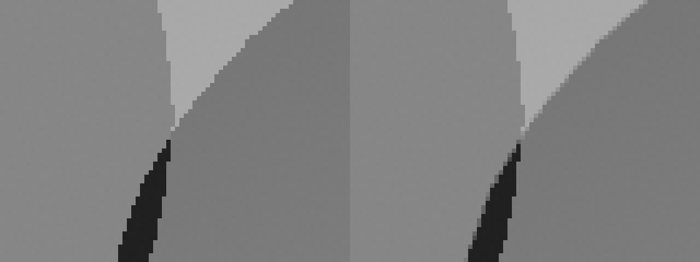
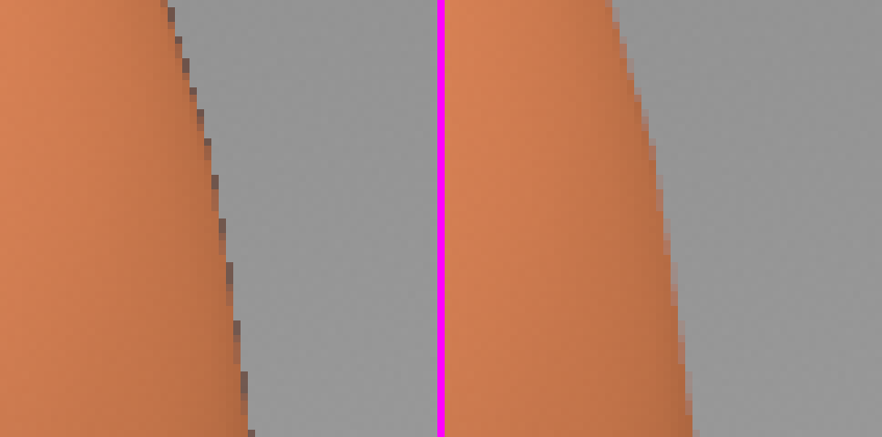

src/render/shadow_mask_pass.rsA compute pass that traces, at each pixel, one hard shadow ray toward each light that reaches the surface its nearest sample shows, against the static and dynamic TLAS, and keeps a bit per light its ray found hidden in the shadow mask, which the lit pass reads. Where a pixel's other samples show a second surface, it traces that one too, into the mask's second layer; where a directional light's verdict differs between neighbouring pixels, it traces that light again from each sample, so the shadow's edge resolves as 4x MSAA resolves geometry's.
Describes main at ec4dfd7c (2026-11-05). A change to the pass rewrites this page and moves the commit; nothing is appended. Read first: The static TLAS and the dynamic TLAS for the TLAS a ray walks, Lit Pass for the shading that reads the mask, The Froxel pass for the lists the point lights' bits follow.
src/render/renderer.rsThe pass needs every surface the lit pass will shade to be in the depth target already, so it runs after both culling phases have drawn their Instances into depth and just before the lit pass shades them.
The frame's passes with shadow rays on, in the order the GPU receives them
Phase one of the culling pass draws the Instances that were visible the frame before into the depth pre-pass; phase two finds the rest after the depth pyramid's test. Without shadow rays the lit pass draws phase two's depth as it shades. With them, phase two's Instances draw into depth in a pass of their own first, so that when the shadow mask pass runs, each depth sample holds the nearest surface the lit pass will shade there, and each sample of the surface normals holds that surface's two normals. Both passes run only with the switch on.
The pass records into the frame's encoder as one compute pass of four dispatches, after five buffer clears: the overflow count, both indirect dispatch sizes, and the counts at the head of both pixel lists.
pass.set_pipeline(&self.nearest_surfaces_pipeline);
pass.set_bind_group(SHADOW_RAY_SCENE.index, &self.shadow_ray_scene, &[]);
pass.set_bind_group(
SHADOW_MASK_BUILD.index,
&self.nearest_surfaces_bind_group,
&[],
);
let (width, height) = self.size;
pass.dispatch_workgroups(
width.div_ceil(SHADOW_MASK_TILE_SIZE),
height.div_ceil(SHADOW_MASK_TILE_SIZE),
1,
);
pass.set_pipeline(&self.second_surfaces_pipeline);
pass.set_bind_group(
SHADOW_MASK_BUILD.index,
&self.second_surfaces_bind_group,
&[],
);
pass.dispatch_workgroups_indirect(&self.second_surface_dispatch, 0);
pass.set_pipeline(&self.list_shadow_edges_pipeline);
pass.set_bind_group(
SHADOW_MASK_BUILD.index,
&self.nearest_surfaces_bind_group,
&[],
);
pass.dispatch_workgroups(
width.div_ceil(SHADOW_MASK_TILE_SIZE),
height.div_ceil(SHADOW_MASK_TILE_SIZE),
1,
);
pass.set_pipeline(&self.trace_shadow_edges_pipeline);
pass.set_bind_group(
SHADOW_MASK_BUILD.index,
&self.sample_verdicts_bind_group,
&[],
);
pass.dispatch_workgroups_indirect(&self.shadow_edge_dispatch, 0);ShadowMaskPass::record, src/render/shadow_mask_pass.rs.
The three bind groups differ in one thing. An indirect dispatch may not read its workgroup counts from a buffer any bound group can write, and the per-pixel dispatches write both dispatch buffers, so each list dispatch binds a 12-byte stand-in in the slot of the buffer it reads from. One function builds all three, at creation and again after every resize, since the groups hold the render targets.
| Constant | Value | What it fixes |
|---|---|---|
SHADOW_MASK_TILE_SIZE | 8 | pixels along each side of a per-pixel workgroup; the list dispatches run 64 lanes in a row |
SHADOW_MASK_LIGHTS | 59 | lights a pixel's word holds a bit for, across its two 32-bit halves |
SHADOW_MASK_SURFACES | 2 | layers of the mask: the nearest sample's surface and the farthest other one |
SHADOW_EDGE_LIGHTS | 7 | directional lights, the first in the light buffer, whose edges are traced again per sample |
SAMPLE_OFFSETS | (0.375, 0.125) (0.875, 0.375) (0.125, 0.625) (0.625, 0.875) | where each of a pixel's four samples lies, in pixels from its top left corner: Vulkan's standard 4x locations |
UNBOUNDED_RAY_DISTANCE | 3.40282347e38 | a directional light's ray end, f32's largest finite value |
SHADOW_RAY_OFFSET_SCALE | 2−16 | a ray origin's offset as a share of the point's largest coordinate, and of 1 m at least |
SHADOW_RAY_PIXEL_OFFSET | 2−5 | the same offset as a share of a pixel's width at the point; the larger of the two is used |
DYNAMIC_TLAS_BOUNDS_MARGIN_SCALE | 2−16 | how far the dynamic TLAS's box grows before a ray is tested against it |
INTERPOLATED_TURN_MARGIN | sin 2° | past this, an interpolated normal turns from a light and hides it with no ray |
AGREEING_TRIANGLE_TURN_MARGIN | sin 2° | a triangle facing a light by this much starts its ray outside, where its two normals agree |
TRIANGLE_TURN_MARGIN | sin 10° | a triangle facing a light by this much starts its ray outside whatever its normals |
NORMALS_AGREE | cos 3° | within this, a sample's two normals agree, as on a flat surface |
From shadow_mask_pass.rs, targets.rs and shadow_mask.wgsl at the commit above. Rust declares SHADOW_MASK_TILE_SIZE, SHADOW_MASK_LIGHTS, SHADOW_EDGE_LIGHTS and SAMPLE_OFFSETS into the WGSL when the module is assembled; SHADOW_MASK_SURFACES is the mask's layer count, which targets.rs creates it with; the shader holds the rest.
sample_surface · build_shadow_maskThe pass has no vertices. From a sample's depth, its place in the pixel and the two normals the depth passes stored for it, it rebuilds the surface the sample shows: a position relative to the camera, a pixel's width there, the triangle's normal and the normal interpolated over the triangle.
Each invocation of build_shadow_mask owns one pixel. It loads the pixel's four depth samples with four explicit loads, since Metal's compiler does not unroll a loop over them, and takes the nearest: under reverse Z the greatest depth, and where two tie, the first. A depth of 0 is the far plane, the background, which nothing shadows; such a pixel's words stay empty.
fn sample_surface(pixel: vec2<i32>, sample: u32, depth: f32, size: vec2<f32>) -> SampleSurface {
let point = vec2<f32>(pixel) + sample_offset(sample);
let position = position_at(camera.view_proj, point, depth, size);
let normals = textureLoad(surface_normals, pixel, sample) * 2.0 - 1.0;
return SampleSurface(
position,
distance(position, position_at(camera.view_proj, point + vec2<f32>(1.0, 0.0), depth, size)),
octahedral_decode(normals.xy),
octahedral_decode(normals.zw)
);
}shadow_mask.wgsl.
position_at, in the common part, inverts the projection for one point: the view-projection matrix holds no translation, since positions reach the GPU relative to the camera, and its reverse-Z projection with no far plane puts the near distance in clip z and the view depth in clip w, so a sample's view depth is the near distance over its stored depth, and its position is that depth along the view axis plus its normalised device coordinates along the scaled right and up axes. The point is taken at the sample's own offset within the pixel, not at the pixel's centre, so it lies on the triangle that sample shows rather than on that triangle's plane extended past an edge.
The pixel's width at the surface is the distance to the point one pixel to the right at the same depth. It scales two things below: the second-surface test and the ray origin's offset.
The surface normals target holds, per sample, the triangle's own normal and the interpolated one as two 8-bit octahedral coordinates each, written by the depth passes' fragment shader from the screen-space derivatives of the position and from the vertex normals. Decoded, each lies within 0.95° of the normal it encodes where the store rounds to the nearest step, as Metal's does, and within about twice that where a backend may round a Unorm store to either neighbour; the margins in the constants table are sized for that error. The fragment shader also reads its one flat input, the Material ID, to no effect, which keeps the Apple M4 Pro from merging the fragments of nearby triangles that share indices under MSAA, so each sample's normals are those of the triangle the lit pass shades there (Metal quirks).
surface_wordA surface's word has a bit per light that casts a shadow at the pixel, in the order the lit pass sums them: the directional lights, then the point lights of the pixel's Froxel, with the Froxel's slice in the word's top bits so the lit pass can tell whose list the bits follow.
surface_word walks the surface's lights in one loop, directional then point, and makes one call that traces for all of them, so the shader holds one ray query's state. For each light it reaches one of three outcomes.
Hidden with no ray where the interpolated normal turns from the light by more than the interpolated turn margin. The lit pass's shading already fades that light out at the terminator, so no ray is spent. For a point light this test is made against the offset to the light scaled by its distance, so a light at no distance is tested without a divide.
Passed over where a point light's range does not reach the surface: no ray, no bit, no count. A light past the word's bits, within range, casts no shadow at the pixel and is counted in the overflow.
Traced otherwise: the directional light's ray runs to the unbounded distance, the point light's to the light and no farther, since whatever lies beyond a light shadows nothing it lights: a ceiling above a lamp does not stand between the lamp and the floor. A hit sets the bit.
let light_count = light.directional_light_count + point_light_count;
for (var entry = 0u; entry < light_count; entry++) {
var direction: vec3<f32>;
var distance: f32;
var traced_surface = surface;
if entry < light.directional_light_count {
if entry >= SHADOW_MASK_LIGHTS {
overflowed++;
continue;
}
direction = normalize(-lights[entry].offset);
distance = UNBOUNDED_RAY_DISTANCE;
if !(dot(interpolated_normal, direction) > -INTERPOLATED_TURN_MARGIN) {
hidden = with_bit(hidden, entry);
continue;
}
if entry < SHADOW_EDGE_LIGHTS {
traced |= 1u << entry;
}
} else {
// … the point light at the Froxel list's entry: within its range,
// under the word's bits, facing by the interpolated normal or by another
// sample's, otherwise hidden …
}
if shadowed(traced_surface.position, traced_surface.pixel_width, traced_surface.triangle_normal, traced_surface.interpolated_normal, direction, distance) {
hidden = with_bit(hidden, entry);
}
}surface_word, shadow_mask.wgsl, the point lights' branch elided.
A point light has one bit per surface and that bit shades every fragment of the surface, so a nearest sample that turns from a point light does not settle it alone. Where another of the surface's samples faces the light by its own interpolated normal, as at a silhouette where the surface behind a nearly edge-on triangle lies within a pixel's width of its plane, or along a smooth surface's terminator, the bit is the verdict of a ray from the first such sample. Only the nearest surface's word has other samples to search; a second surface's word is traced from its one sample.
With the froxel_lights Render switch off the bits follow every point light in light order, as brute force sums them, and the slice bits are 0.
shadowed · first_intersectionThe ray starts in the TLAS's frame, a small step off the surface along the triangle's normal: outward where the triangle faces the light, inward where it turns from a light the interpolated normal still faces. An inward ray passes exactly one back face, where it leaves its own mesh, and anything beyond that hides the light.
Both TLAS place their Instances in f32 in a frame whose origin is the corner of the camera's Anchor when the scene loaded, and a ray must start in that frame. The shader knows the point relative to the camera, so it composes it into the TLAS's frame with camera_relative_position, the function the vertex shader uses to place an Instance, with the camera in the Instance's place and the TLAS's anchor in the camera's: the anchor difference is exact in integers, so f32 only holds magnitudes near the camera.
A ray that starts exactly on its surface can meet that surface, since the point was rounded on its way to becoming an origin. The origin moves off the surface by the larger of two distances: a share of the point's largest coordinate, in either frame, which covers the roundings of rebuilding, composing and intersecting, as each rounds a coordinate in proportion to its size; and a share of a pixel's width at the point, which covers where the rasteriser's fixed-point grid put the depth off the TLAS's triangle. The second dominates near the camera and at low resolution, the first far away.
let extent = max(abs(tlas_position), abs(position));
let offset = max(
SHADOW_RAY_OFFSET_SCALE * max(max(extent.x, extent.y), max(extent.z, 1.0)),
SHADOW_RAY_PIXEL_OFFSET * pixel_width
);
let facing = dot(triangle_normal, direction);
let leaves_surface = facing >= TRIANGLE_TURN_MARGIN
|| (facing >= AGREEING_TRIANGLE_TURN_MARGIN
&& dot(triangle_normal, interpolated_normal) >= NORMALS_AGREE);
let origin = tlas_position + triangle_normal * select(-offset, offset, leaves_surface);shadowed, shadow_mask.wgsl.
A coarse smooth-shaded mesh is flat triangles shaded with curved normals. Near a light's terminator a triangle can turn from the light while the normals interpolated over it still face it, and a ray leaving that triangle along its normal would run back into its own mesh. So the ray leaves the surface only where the triangle faces the light by the triangle turn margin, or by the smaller agreeing margin where its two normals agree, as on a flat floor. Everywhere else it starts just inside the surface.
A ray that leaves the surface asks for any hit, and any hit hides the light. A ray that starts inside asks for the nearest hit first. A ray inside a closed mesh meets the back of a triangle on its way out, so a nearest hit that is a back face is the ray leaving its own mesh, and the search goes on from just past it with an any-hit ray. A nearest hit that is a front face is something else met first, an occluder entered from outside, and the light is hidden. Two turns at most, through one call.
var flags = select(0u, RAY_FLAG_TERMINATE_ON_FIRST_HIT, leaves_surface);
var start_distance = 0.0;
var hidden = false;
loop {
let hit = first_intersection(flags, origin, direction, start_distance, distance);
let found = hit.kind != RAY_QUERY_INTERSECTION_NONE;
let any_hit = (flags & RAY_FLAG_TERMINATE_ON_FIRST_HIT) != 0u;
if any_hit || !found || hit.front_face || hit.t + offset >= distance {
hidden = found && (any_hit || hit.front_face);
break;
}
flags = RAY_FLAG_TERMINATE_ON_FIRST_HIT;
start_distance = hit.t + offset;
}
return hidden;shadowed, shadow_mask.wgsl. For a point light, an exit within one offset of the light settles the verdict without a second query, which also keeps every ray's start at or before its end.
first_intersection queries the static TLAS first. A ray query finds hits as candidates: an opaque one is committed as soon as it is found, any other waits for the shader to confirm it, which is how alpha-tested geometry is traced and why a general query calls rayQueryProceed in a loop. Here nothing needs confirming. Every BLAS is built OPAQUE and the ray forces opacity besides, so one rayQueryProceed completes the traversal and the committed intersection is the answer.
| Ray field | Value | Why |
|---|---|---|
| flags | force opaque, with terminate on first hit for an any-hit ray | every hit counts; an any-hit search ends at the first hit found, a nearest-hit search keeps the nearest |
| cull mask | 0xff | every Instance enters its TLAS with the mask 0xff, so a ray meets them all |
| start distance | 0, or just past the back face an inside ray left through | the origin's offset keeps a ray off its own surface |
| end distance | the unbounded distance, or the distance to a point light; for the dynamic query, the static hit's distance where there was one | a hit past the light shadows nothing it lights; a dynamic hit counts only where it is nearer than the static one |
| origin | the surface point in the TLAS's frame, moved off the surface, or into it for an inside ray | the frame and the offset above |
| direction | the unit vector toward the light | the direction the shading uses |
RayDesc, as first_intersection fills it for each query at the commit above.
It then queries the dynamic TLAS only if the frame has Moving Instances, no any-hit has been found already, and the ray's segment up to the static hit meets the box that holds the dynamic TLAS's triangles, grown by the margin scale; a query starts at the TLAS's root however far the ray passes from its Instances, so the box test saves the traversal where the segment misses it. A nearer dynamic hit replaces the static one.
Every ray of a surface goes through this one function, so the shader holds one query's registers. Its flags are therefore a run-time value, which costs a scene of few short rays a little and saves scenes of many rays more.
naga's Metal backend lowers the ray's flags into Metal's intersection parameters: forced opacity becomes the intersector's forced opacity, and terminate on first hit its accept-any-intersection. It lowers no back-face culling flag, which is why the shader reads front_face itself rather than culling back faces in the traversal. A TLAS refers to its BLASes without binding them, so wgpu makes the BLASes a command buffer's TLAS refers to resident when the buffer is submitted, through a residency set per submitted command buffer. The surface normals' Unorm stores round to the nearest step on Metal, the rounding the 0.95° bound above is for; Vulkan may round to either neighbour, and the margins allow about twice that.
build_shadow_mask · trace_second_surfacesUnder MSAA an edge pixel's samples can show two surfaces. One word, traced from the nearest sample, would give the farther surface's fragments the nearer one's shadow. So the pass finds the samples off the nearest sample's triangle plane, traces the farthest of them into the mask's second layer, and marks which samples show it.
A sample shows another surface when it lies off the plane of the nearest sample's triangle by more than a pixel's width at that distance, along the triangle's own normal. Measuring from the plane, not comparing raw depths, keeps a floor seen at a grazing angle one surface: its samples differ in depth but lie on the plane. The interpolated normal would tilt the plane away from where the samples are, so the test uses the triangle's.
let second = abs(off_plane) > vec4<f32>(surface.pixel_width) & depths > vec4<f32>(0.0);
let bits = select(vec4<u32>(0u), vec4<u32>(1u, 2u, 4u, 8u), second);
second_samples = bits.x | bits.y | bits.z | bits.w;
if second_samples != 0u {
// Depth 2 lies past the near plane's 1, so no other is less.
let candidates = select(vec4<f32>(2.0), depths, second);
let second_depth = min(min(candidates.x, candidates.y), min(candidates.z, candidates.w));
let second_sample = first_sample_of(candidates, second_depth);
let entry = atomicAdd(&second_surfaces.count, 1u);
second_surfaces.entries[entry] = invocation.x | (invocation.y << 16u) | (second_sample << 30u);
let group_size = SHADOW_MASK_TILE_SIZE * SHADOW_MASK_TILE_SIZE;
if entry % group_size == 0u {
let groups = entry / group_size + 1u;
atomicMax(&second_surface_dispatch[0], min(groups, MAX_WORKGROUPS_PER_DIMENSION));
atomicMax(
&second_surface_dispatch[1],
(groups + MAX_WORKGROUPS_PER_DIMENSION - 1u) / MAX_WORKGROUPS_PER_DIMENSION
);
atomicStore(&second_surface_dispatch[2], 1u);
}
}build_shadow_mask, shadow_mask.wgsl.
Second surfaces lie thinly along silhouettes, so tracing them in place behind a branch would hold up every SIMD group that holds one. Instead each such pixel claims an entry in a frame-wide list with one atomic add, packing its column in the low 16 bits, its row in the next 14 and the sample to trace from in the top 2; the entry that opens each run of 64 grows the indirect dispatch's workgroup count, in rows of the dispatch limit per dimension. trace_second_surfaces then runs an invocation per entry: lane 0 of each workgroup loads the count once and shares it with workgroupUniformLoad, each lane past the count returns, and the rest rebuild their sample's surface and write its word into layer 1.
The mask's samples texel marks, in its low four bits, which samples show the second surface. The row packing is why a render target is at most 214 pixels tall, which the targets module asserts.
list_shadow_edges · trace_shadow_edgesOne ray per pixel is a point sample, so a shadow's edge across one surface steps by whole pixels beside geometry that MSAA smooths. Where a directional light's verdict differs from a 4-neighbour's, the pass traces that light again from the pixel's other samples and keeps a verdict per sample, for the first seven directional lights.
build_shadow_mask writes, beside the mask, a 32-bit word per pixel of directional verdicts: the second surface's samples in bits 0 to 3, a hidden bit per light from bit 8, and a traced bit per light from bit 16. A later dispatch can read every pixel's word; nothing inside one dispatch can see another workgroup's writes.
list_shadow_edges runs over every pixel and lists it when either holds. The pixel's verdicts differ from its left, right, upper or lower neighbour's for a light both traced a ray toward: a light either surface turned from is left out, since its shading already fades at the terminator, and at the target's sides the pixel stands in for the neighbour past it. Or the nearest sample turned from a light that another sample of the nearest surface faces by its own interpolated normal: at a silhouette the pixel shows one surface by depth while its samples disagree about facing. The second test reads each sample's normals here rather than in build_shadow_mask, whose ray queries already bound its occupancy; this dispatch holds no query.
fn differing_lights(own: u32, neighbour: u32) -> u32 {
return ((own ^ neighbour) >> VERDICT_HIDDEN_SHIFT)
& (own >> VERDICT_TRACED_SHIFT)
& (neighbour >> VERDICT_TRACED_SHIFT)
& EDGE_LIGHTS;
}shadow_mask.wgsl. A directional light's bit sits at the same index at every pixel, so the comparison crosses Froxel borders.
Listed pixels go into a second frame-wide list, sized for its indirect dispatch as the first is. trace_shadow_edges runs an invocation per entry, works out the lights that differ or were turned from, and, for each sample other than the nearest that is neither a second-surface sample nor background, rebuilds that sample's surface and takes each such light's verdict there: hidden with no ray where the sample's interpolated normal turns from it, otherwise by a ray. build_shadow_mask had written each light's nearest verdict into all four of its sample bits; this dispatch overwrites the bits of the samples it traced, so an unlisted pixel reads as before.
for (var sample = 0u; sample < SAMPLE_COUNT; sample++) {
let depth = depths[sample];
if sample == nearest || ((second_samples >> sample) & 1u) == 1u || depth <= 0.0 {
continue;
}
let surface = sample_surface(pixel, sample, depth, vec2<f32>(size));
for (var index = 0u; index < edge_light_count; index++) {
if ((edge_lights >> index) & 1u) == 0u {
continue;
}
let bit = 1u << (SAMPLE_COUNT * index + sample);
sample_verdicts = select(sample_verdicts & ~bit, sample_verdicts | bit, directional_hidden(surface, index));
}
}trace_shadow_edges, shadow_mask.wgsl.

shadows, 8x. Left, one ray per pixel: the edge steps by whole pixels. Right, with the edge rays: the edge resolves from four verdicts per pixel.
shadows, 8x. Left, one word per pixel: the ground's samples take the sphere's shadow, an outline. Right, a word per surface: each fragment reads its own surface's bits.fs_main, src/render/shaders/main.wgslA fragment loads the samples texel, picks the layer of the surface its covered samples show, and shades each light by its bit, or, for the first directional lights at the nearest surface, by the share of its covered samples the light reaches.
let pixel = vec2<u32>(in.clip_position.xy);
let samples = textureLoad(shadow_mask_samples, pixel, 0).r;
nearest_surface = (covered & samples) == 0u;
mask = textureLoad(shadow_mask, pixel, select(1u, 0u, nearest_surface), 0).rg;
sample_verdicts = samples >> SAMPLE_COUNT;fs_main, main.wgsl. covered is the fragment's sample_mask input, the samples its triangle covers, kept to the pixel's four.
A fragment that covers any sample marked as the second surface's reads layer 1; otherwise layer 0. For a directional light under the edge-light count at the nearest surface, directional_hidden_share counts the hidden bits among the fragment's own covered samples and divides by their number, so two triangles that split a pixel each take the answer for their own samples and the resolve averages two right values. Every other light reads one bit through masked, and a bit past the word's count reads as not hidden.
A point light's bit is the number of directional lights plus its entry in the Froxel's list, as long as the fragment's Froxel is the word's. Both passes find the Froxel's screen rectangle from the pixel, but the slice comes from depth, which can differ between the sample the word was traced from and the fragment: where a slice boundary falls between them. So the lit pass compares its own slice with the word's top bits and, where they differ, looks each light up in the word's Froxel list by binary search, since the list is in light order, and takes the bit of the entry it finds; a light that list lacks casts no shadow at that fragment.
cargo testAn analytic oracle in f64 judges the shadows scene pixel by pixel; Renderer tests pin each rule of the pass at the seam the lit pass reads; shader function tests hold the rebuild and the TLAS frame to oracles; and the Goldens hold every Reference scene's image.
| Test | Where | What it pins |
|---|---|---|
shadow_rays_darken_exactly_the_spheres_analytic_shadows | tests/shadows.rs | on the Reference scene shadows, rays on against rays off darkens exactly the pixels where the true sphere's shadows fall on the ground, under the sun and the point light, outside a one-pixel band around every edge; every sphere pixel is unchanged, its terminator band included |
each_depth_sample_lies_where_the_pass_rebuilds_it | shadow_mask_pass.rs | a sloped triangle's depth at every sample of the backend's target equals its plane at SAMPLE_OFFSETS |
position_at_rebuilds_the_point_a_depth_shows_through_a_pixel | shader_function_tests.rs | the position rebuilt from a depth matches an f64 oracle |
octahedral_coordinates_decode_to_the_unit_vector_they_encode | shader_function_tests.rs | decoded normals within a stated angle after rounding to 8 bits, over the axes, the fold and a Fibonacci lattice |
camera_relative_position_meets_the_precision_bar_within_100_km | shader_function_tests.rs | the composition that puts a ray's origin in the TLAS's frame holds its precision bar far from the World's origin |
a_segment_meets_a_box_where_some_point_of_it_lies_in_the_box | shader_function_tests.rs | the dynamic TLAS's box test against an oracle, parallel and unbounded rays included |
shadows_fall_from_both_tlas_and_shadow_rays_off_draw_none | renderer.rs | a static and a moving occluder each shadow the floor; with the switch off the frame equals the frame without them |
a_point_lights_shadow_ray_ends_at_the_light | renderer.rs | a square beyond the light shadows nothing it lights |
the_shadow_mask_holds_each_lights_bit_and_its_froxels_slice | renderer.rs | the word's bit layout and slice bits as read back |
an_edge_pixel_resolves_between_a_shadowed_surface_and_a_lit_one | renderer.rs | a panel's edge through a pixel's middle: the pixel lies between its neighbours, with the shadow on either surface |
an_edge_pixel_of_a_panel_seen_edge_on_resolves_between_it_and_the_lit_floor | renderer.rs | a nearly edge-on triangle's turned nearest sample does not darken the lit surface behind it |
a_pixel_split_by_a_suns_shadow_edge_resolves_between_shadow_and_light | renderer.rs | two samples in shadow, two in light: the pixel lies between its shadowed and lit neighbours |
a_light_past_the_shadow_masks_bits_casts_no_shadow_and_is_counted | renderer.rs | the overflow counter equals the pixels a light past the bits reaches |
only_the_shadow_mask_pass_and_the_dynamic_tlas_markers_declare_a_tlas | shader_tests.rs | no other module binds an acceleration structure |
refitted_blases_cast_the_shadows_rebuilt_ones_cast | tests/crowd.rs | the crowd's two update forms give the same shadows through this pass |
| the Goldens | tests/goldens.rs | every Reference scene's frame with rays on, at the origin and shifted far from it, matches its Golden |
Test names at the commit above; cargo test runs them all, the GPU ones on any adapter that meets the capability floor.
praxis report bench/baselines/<adapter>The pass is the largest single GPU pass in every scene on every adapter but one, town on DX12, where the lit pass is larger. Shadow-ray time, the frame with rays on less the frame with them off, measures what shadows cost as a whole: on Metal neighbouring passes can overlap, so one pass's timestamps can share time with another's.
Medians in microseconds from the committed Baselines, release builds at 2560×1440 with 4x MSAA over 1,800 measured frames, as praxis report prints them; the live figures are the Series on the Bench history page. CI's lavapipe Baselines, at 640×360 with only their counters judged, are left out.
| Scene | Adapter | shadow_mask_pass | Shadow-ray time | GPU frame | lit_pass |
|---|---|---|---|---|---|
shadows | Apple M4 Pro, Metal | 2,813.4 | 2,922.7 | 4,094.7 | 496.8 |
shadows | RTX 2070 SUPER, Vulkan | 1,361.7 | 1,473.2 | 2,338.8 | 395.3 |
shadows | RTX 2070 SUPER, DX12 | 1,304.0 | 1,400.5 | 2,341.4 | 428.0 |
helmet | Apple M4 Pro, Metal | 4,972.3 | 5,155.2 | 6,689.1 | 808.5 |
helmet | RTX 2070 SUPER, Vulkan | 1,614.3 | 1,669.9 | 2,736.3 | 481.3 |
helmet | RTX 2070 SUPER, DX12 | 1,562.6 | 1,615.4 | 2,717.7 | 501.8 |
pbr-sweep | Apple M4 Pro, Metal | 2,606.3 | 2,751.6 | 3,851.5 | 470.2 |
pbr-sweep | RTX 2070 SUPER, Vulkan | 882.2 | 928.0 | 1,692.5 | 289.5 |
pbr-sweep | RTX 2070 SUPER, DX12 | 795.3 | 841.1 | 1,611.1 | 288.3 |
normal-tangent | Apple M4 Pro, Metal | 2,406.0 | 2,522.9 | 3,664.5 | 475.8 |
normal-tangent | RTX 2070 SUPER, Vulkan | 852.5 | 919.4 | 1,680.2 | 305.7 |
normal-tangent | RTX 2070 SUPER, DX12 | 794.6 | 851.6 | 1,639.2 | 309.2 |
uv-grid | Apple M4 Pro, Metal | 1,705.8 | 1,830.1 | 2,917.0 | 447.8 |
uv-grid | RTX 2070 SUPER, Vulkan | 948.0 | 1,012.4 | 1,747.0 | 288.2 |
uv-grid | RTX 2070 SUPER, DX12 | 883.7 | 929.1 | 1,685.5 | 288.6 |
minification | Apple M4 Pro, Metal | 1,694.2 | 1,844.0 | 3,003.5 | 528.5 |
minification | RTX 2070 SUPER, Vulkan | 920.8 | 1,014.7 | 1,846.3 | 387.1 |
minification | RTX 2070 SUPER, DX12 | 851.6 | 903.0 | 1,819.8 | 405.4 |
far-coplanar | Apple M4 Pro, Metal | 1,478.1 | 1,597.9 | 2,598.5 | 344.5 |
far-coplanar | RTX 2070 SUPER, Vulkan | 615.3 | 683.2 | 1,594.7 | 306.9 |
far-coplanar | RTX 2070 SUPER, DX12 | 512.0 | 559.7 | 1,622.2 | 417.5 |
orrery | Apple M4 Pro, Metal | 1,815.7 | 1,952.4 | 2,917.3 | 335.0 |
orrery | RTX 2070 SUPER, Vulkan | 711.6 | 753.4 | 1,424.8 | 183.2 |
orrery | RTX 2070 SUPER, DX12 | 397.8 | 423.2 | 1,110.5 | 168.8 |
texture-wall | Apple M4 Pro, Metal | 2,973.2 | 387.6 | 15,975.0 | 607.2 |
texture-wall | RTX 2070 SUPER, Vulkan | 503.7 | 464.7 | 1,207.2 | 199.4 |
texture-wall | RTX 2070 SUPER, DX12 | 378.4 | 310.3 | 1,095.3 | 196.7 |
crowd | Apple M4 Pro, Metal | 1,950.3 | 2,128.6 | 3,747.5 | 712.5 |
crowd | RTX 2070 SUPER, Vulkan | 838.4 | 940.1 | 2,169.8 | 423.9 |
crowd | RTX 2070 SUPER, DX12 | 578.9 | 656.3 | 1,970.2 | 464.9 |
town | Apple M4 Pro, Metal | 11,924.1 | 10,792.9 | 19,935.0 | 3,762.6 |
town | RTX 2070 SUPER, Vulkan | 3,582.8 | 3,994.9 | 9,395.0 | 2,995.3 |
town | RTX 2070 SUPER, DX12 | 2,992.8 | 3,502.6 | 9,279.4 | 3,248.1 |
bench/baselines/apple-m4-pro, nvidia-geforce-rtx-2070-super and nvidia-geforce-rtx-2070-super-dx12 at the commit above. texture-wall's frame is set by its bound textures, not its rays, so its shadow-ray time is noise. On the reference machine, the Apple M4 Pro, two scenes' GPU frames are over their Budget: texture-wall's for its textures, and town's, with the sun and its street lamps over a dense scene, by less than its shadow-ray time.
The pass's memory is a fixed number of bytes per pixel, all of it in render targets but the three small dispatch buffers and the overflow count: the mask's two layers, the samples texel, the directional verdicts, an entry in each of the two lists since every pixel could be listed, and the surface normals the depth passes write for it at four samples per pixel.
| Target or buffer | Format | Bytes per pixel |
|---|---|---|
| shadow mask, 2 layers | Rg32Uint | 16 |
| shadow mask samples | R32Uint | 4 |
| directional verdicts | array<u32> | 4 |
| second surfaces list | PixelList | 4, plus a 4-byte count |
| shadow edges list | PixelList | 4, plus a 4-byte count |
| surface normals, 4 samples | Rgba8Unorm, 4x MSAA | 16 |
Hard rays, one per light, no history. ADR 0020 gives direct light one hard shadow ray per pixel per light, complete in every frame, so a shadow never lags a moving sun or object; ADR 0008 keeps screen-space history out of the frame, so a denoiser over jittered rays is not an option, and soft sun shadows wait for area lights. Ray queries are in the capability floor of ADR 0021, so every adapter the engine starts on can trace.
A compute pass, not the fragment shader. The rays were first traced inline in the lit pass. A ray query's state holds registers across the whole shading loop and lowers the fragment shader's occupancy, and on the Apple M4 Pro the query's mere presence cost the lit pass time even where it never ran; at an MSAA edge each covering triangle's fragment traced its own rays besides. Tracing once per pixel from the depth target cut the rays' cost several times over and left the lit pass with no query.
The nearest sample, then a second surface. Surface-based antialiasing observes that a pixel covered by many triangles shows very few distinct surfaces, so a small fixed number of shading samples per surface is enough. The mask stores two words per pixel, not one per triangle or per sample, and finds the second surface the way deferred renderers find per-sample pixels: by each sample's distance from the plane the nearest sample's derivative, here its triangle, predicts.
Lists, not branches. Edge pixels are a minority laid along thin lines that cross most SIMD groups, so extra rays traced in place behind a branch cost about as much as tracing every pixel again. Packing the pixels that need more work into a list and dispatching over it is the tile-based deferred recipe, applied frame-wide here because packing within each workgroup did not pay on the reference hardware.
More rays where neighbours disagree. Only more visibility samples recover an edge inside one surface; a filter over one sample per pixel can straighten the stairs but not restore what no sample saw. Comparing a pixel's verdict with its four neighbours' is the adaptive supersampling of the first recursive ray tracer, and the split shipped by at least one ray-traced game. It is confined to the first seven directional lights because their verdicts fit the samples texel's spare bits; a ray per sample at every pixel for every light would cost about an order of magnitude more.
The inside ray, not a skipped one. Skipping the ray where a triangle turns from a light its interpolated normal faces smooths the terminator but lets light into cast shadows, since whatever stands in the ray's way is ignored. Starting the ray inside the surface and passing exactly one back face keeps the mesh's own triangles out of the way while an occluder, a closed mesh entered through a front face, still hides the light. The general treatment moves the origin by the shading normals and needs the triangle's vertices, which the pass does not have.
An offset that scales. A fixed offset is not scale invariant: the error of an intersection grows with the point's distance from the frame's origin, so the offset grows with the largest coordinate. The second term, a share of a pixel's width, is the engine's own, for a depth that lies on the triangle as the rasteriser snapped it rather than on the TLAS's.
Fifty-nine bits, then no shadow. A cap on the lights a Froxel shadows was rejected first. Which lights a Froxel lists depends on where the camera is: as it moves, a light's range sphere comes to reach the Froxel or stops reaching it, and the list gains or loses the light. Capped at a few lights per Froxel, a list would shadow the first few it holds, so a light joining ahead of them would take a shadow away from one frame to the next and give it back when it left, with nothing in the scene changing. A Froxel's list can still hold more lights than a word has bits, 127 against 59, and the alternative for the lights past the bits, an inline ray query in the lit pass, cost the lit pass time without ever running. So the word's capacity is the one cap, met only where more than fifty-nine lights reach a pixel, and the overflow is counted so Frame stats show when a scene reaches it.
Reverse Z and anchors throughout. The nearest sample is the greatest depth and the background is 0 because of ADR 0015; the TLAS frame composition and the camera-relative positions follow ADR 0014, which forbids any World position in f32 on the GPU.
Three surfaces or more in one pixel. Every off-plane sample is marked and the farthest is traced, so a middle surface's fragment takes the farthest one's word.
Coverage before the depth test. A fragment's sample mask may include samples where the fragment then fails the depth test, so a fragment of the nearest surface that runs under another at a sample can read the second word.
What no ray saw. A shadow narrower than the spacing of the rays is refined where it crosses one pixel's ray and stays a gap between. A shadow's corner that clips a pixel's samples while its ray and its four neighbours' agree is not listed; the comparison does not look diagonally.
Point lights' edges, directional lights past the seventh, the second surface. Each keeps one ray per pixel per light.
Normal maps. The mask follows the interpolated normal; a bump the normal map turns toward a light past where the interpolated normal turns from it stays dark.
Overlapping shells and interpenetrating meshes. An inside ray that starts in one shell can meet another shell's front face first and be hidden, or pass another mesh's back face as if it were its own.
Hard edges. The sun has no penumbra; contact shadows are right, distant ones sharper than the sun's disc would make them.
Backends. Which side of a triangle a query reports as its front face is pinned by the shadows scene's oracle on Metal and on Vulkan through lavapipe, where an inverted answer would hide the sun across the terminator band the oracle judges. No run of that test on DX12 is recorded, though the scene's DX12 Baselines are.
Primary sources the pass rests on, each with what it settles here; the engine's registry, docs/references.toml, holds the section and the verbatim quote under the key the code cites.
wachter-binder-2019-offset-error. The book is CC BY-NC-ND, so none of its code is copied.d3d11.3-rasterizer-precision, vulkan-subpixel-precision-bitsstandardSampleLocations, so a test checks the target; vulkan-standard-sample-locationsnvidia-2022-rtx-best-practices-shadow-rayslauritzen-2010-edge-detection, lauritzen-2010-per-sample-schedulingsalvi-2012-sbaa-surfaceskhr-lights-punctual-rangetown; the 4 ms ceiling the edge rays were held to is ADR 0020's amendmentThe pass took its present form in nine steps over ten days of the third milestone: the rays began in the lit pass's fragment shader, moved into this compute pass, gained the dynamic TLAS and its box test, the surface normals and the inside ray for the terminator, the second surface, the per-sample edge rays, the turned-sample searches and the pixel-width offset. The volumes that narrated those steps, with each one's measurements and images, are absorbed into this page; Crowd Shadows Explained still tells how the crowd's two update forms came to cast the same shadows. This page describes the mechanism as it is.